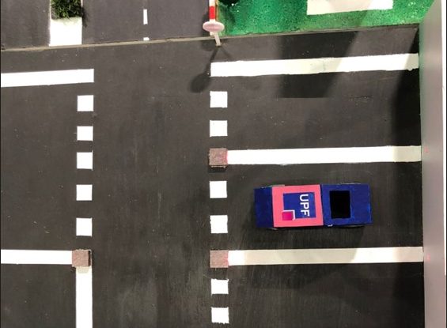
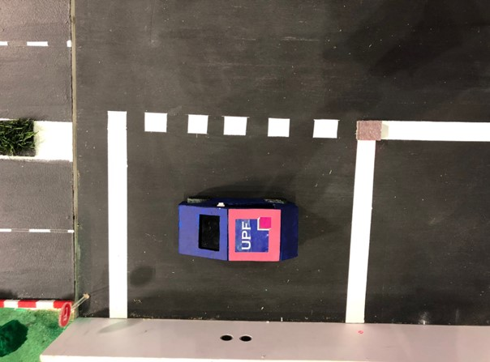

Ibrahim BAKARI SANI
La modernisation du monde va de pair avec l’avancement de la technologie entrainant de plus en plus l’automatisation des systèmes,
c’est dans cette optique que nous travaillons sur le projet de la réalisation d’un système intelligent de gestion et contrôle des permis de conduire (Auto-Ecole).
En effet ce systèmes une fois mis sur place permettra l’évaluation des apprenants conducteurs lors de leur test de conduite en surveillants les erreurs commises
par ces derniers et en amputant des points à chaque erreur. A la fin du test le système aura amputé tous les points dû aux mauvaises manœuvres du candidat et attribuera
une note finale au candidat qui permettra de juger le candidat.
Dans ce système, notre équipe intervient principalement sur la partie de parking, qui est l’une des parties
les plus importante du système, vu l’importance de savoir bien stationner la voiture pour un conducteur.
Notre système va se baser spécialement sur ce parking néanmoins il pourra être modifié en fonction de la cible. Les points à respecter sur ce parking sont :
|  | |
| Stationnement vertical |
|  | |
| Stationnement horizontal |
{kind=link}